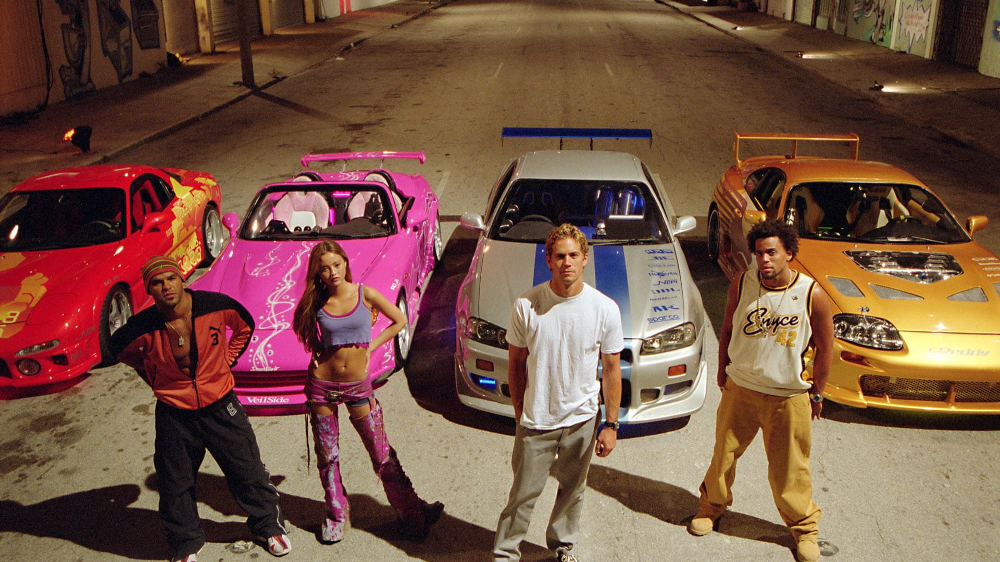

Velozes e Furiosos 2

Sinopse
O ex-policial Brian O'Conner se muda de Los Angeles para Miami para recomeçar sua vida. Ele acaba se envolvendo em rachas na sua nova cidade com seu amigo Tej e Suki. Suas aventuras terminam quando ele é preso e faz um acordo com agentes do FBI. Brian tem a missão muito perigosa de prender um poderoso chefe do cartel das drogas.
informações
Lançado em 12 de Junho de 2023, Velozes e Furiosos contava com a direção de John Singleton, e com um elenco espetacular com os principais artistas: Paul Walker; Tyrese Gibson; Devon Aoki; Cole Hauser; Eva Mendes; Ludacris.